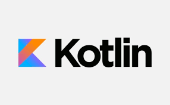

Lenguaje Kotlin.
Descripción.
Kotlin
es un lenguaje de programación moderno y conciso diseñado para ser interoperable con
Java
. Desarrollado por JetBrains, se caracteriza por su legibilidad, expresividad y seguridad.
Kotlin
ofrece un equilibrio entre la concisión de los lenguajes modernos y la compatibilidad con el rico ecosistema de
Java
.
Características.
Lenguaje Interoperable:
Kotlin
es completamente interoperable con
Java
, lo que facilita la integración con proyectos existentes escritos en
Java
.
Orientado a Objetos:
Kotlin
es un lenguaje de programación orientado a objetos que admite programación funcional.
Conciso y Legible: La sintaxis de
Kotlin
es más concisa y legible en comparación con
Java
, lo que facilita la escritura y mantenimiento del código.
Nulo por Defecto:
Kotlin
aborda el problema de las referencias nulas al hacer que las variables no puedan ser nulas a menos que se especifique explícitamente.
Expresivo: Facilita la expresión de ideas y patrones de diseño, lo que mejora la p roductividad del desarrollador.
Soporte para Desarrollo Android:
Kotlin
es un lenguaje oficialmente respaldado para el desarrollo de aplicaciones Android junto con
Java
.
Seguro: Incluye características de seguridad, como la inmutabilidad por defecto, que ayuda a prevenir errores comunes.
Usos.
Desarrollo de Aplicaciones Android
:
Kotlin
es utilizado extensivamente para el desarrollo de aplicaciones móviles en la plataforma Android.
Desarrollo Web del Lado del Servidor: Se puede utilizar para construir aplicaciones web del lado del servidor utilizando frameworks como Ktor o Spring.
Desarrollo de Aplicaciones Empresariales:
Kotlin
es adecuado para el desarrollo de aplicaciones empresariales gracias a su interoperabilidad con
Java
y su expresividad.
Automatización de Tareas: Puede utilizarse para escribir scripts y herramientas de automatización debido a su concisión y legibilidad.
Desarrollo de Microservicios:
Kotlin
es una opción popular para construir microservicios debido a su soporte para frameworks modernos como Spring Boot.
Desarrollo de Aplicaciones de Escritorio
: Puede utilizarse para desarrollar aplicaciones de escritorio utilizando frameworks como TornadoFX.
Desarrollo de Backend
:
Kotlin
es utilizado en el desarrollo de backend para construir servicios web y aplicaciones utilizando frameworks como Ktor y Spring Boot.
